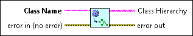

Get Class Hierarchy from Class Name VI
Owning Palette: VI Scripting VI and Functions
Requires: VI Scripting
Returns an array of class names, in descending order of inheritance, from the top-level class name to the class name you specify. For example, if you specify WhileLoop in Class Name this VI returns the array [Generic, Gobject, Node, Structure, Loop, WhileLoop]. This VI works for any valid class name, regardless of whether you have scripting or private functionality turned on or off.
This VI works on any class name that you can select in a Class Specifier Constant, which includes anything under the VI Server class hierarchy except for Application and VI.

 Add to the block diagram Add to the block diagram |
 Find on the palette Find on the palette |